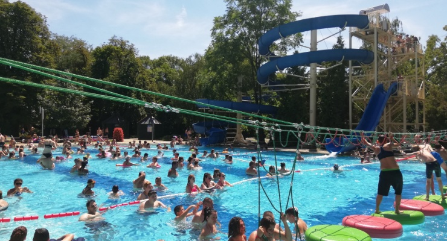
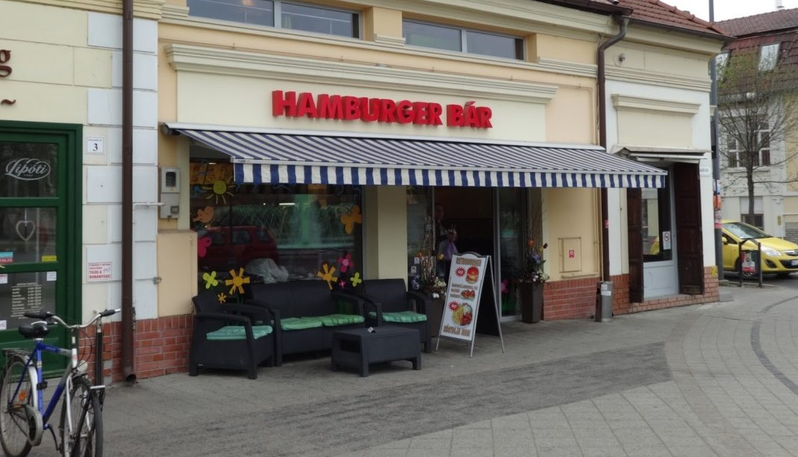
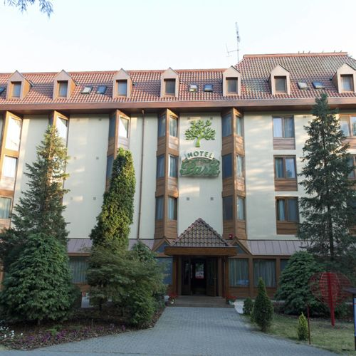
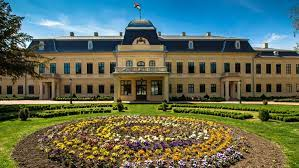
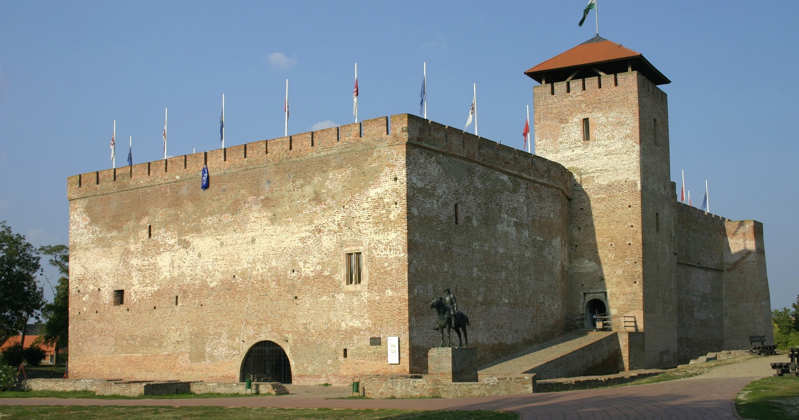

Gyulai kirándulás
Az út:
- Találkozás: Az iskola előtt 6:45-kor gyülekező
- Indulás: 7 órakkor az iskola melletti buszmegállóról
- Az út hossza: 1 óra 45 perc
- Szállás elfoglalása: 8:50
Programok
1.nap
- Gyulai vár meglátogatása (kb 3 perc séta a szállástól), itt körülbelül fél órát töltenénk
- Ezt követően meglátogatnánk az Almásy Kastélyt, itt egy órát töltenénk
- Ezután a gyulai Hamburger Bárba mennénk ebédelni
- Ebéd után visszamennénk a szállásra és felkészülnénk, átöltöznénk, hogy felkészüljünk a Várfürdőre
- A fürdőbe 20:00-ig lennénk, ezt követően visszatérnénk a szállásra és megvacsorázunk és ezt követően szabadfoglalkozás
2.nap
- Éberdés: 8:00-kor legkésőbb
- Ébredés után megerggeliznénk 8:30-kor és azt követően összepakolnánk
- Legkésőbb 10:00-ra el kell hagyni a szállást
- A visszafele vezető út 1 óra 45 perc, az iskolánál megáll a busz, és onnan mindenki mehet haza
Információk
Költség:
- Étel: a szálláson az ebéd, a vacsora és a reggeli összesen: 5000Ft
- Szállás költsége fejenkénk: 9500Ft
- Mindenki hozzon magával költőpénzt saját belátása szerint
- A busz költésge fejenként 2500Ft (oda-vissza)
- A strandbelépő, a vár és a kastély belépő ára összesen: 10000Ft
- Összesen: 27000Ft + költőpénz




